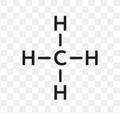
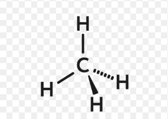

Химия - одна из важнейших и обширных областей естествознания, наука, изучающая вещества, также их состав и строение, их свойства, зависящие от состава и строения, их превращения, ведущие к изменению состава — химические реакции, а также законы и закономерности, которым эти превращения подчиняются.
До появления химии существовала так называемая алхимия
НажмиАлхимия - древняя область натурфилософии, сформировавшаяся в лоне герметической традиции. Это философское протонаучное направление исторически практиковалось в Китае, Индии, средневековом исламском мире и Европе, западное направление алхимии получило особое развитие в Позднее средневековье и Новое время. Европейская алхимия впервые засвидетельствована в ряде псевдоэпиграфических текстов, написанных в римском Египте в течение первых нескольких веков нашей эры.
Алхимия, как наука, имеет очень богатую и длинную историю развития. По мере развития, менялись представление об окружающем мире, предмет изучения алхимии, а значит, цели и задачи. “Алхимия – это наука о приготовлении некоего состава или эликсира, который будучи прибавлен к неблагородным металлам, превращает их в металлы совершенные” - писал Роджер Бекон.
Роджер Бекон не был шарлатаном, а был философом и естествоиспытателем. Изучив его труды и биографию, можно сделать вывод, что он действительно пытался познать истинные законы природы, в том числи и через алхимию. Но это было в XI веке. С тех пор задачи алхимии расширялись. Спустя несколько столетий, некоторые алхимики уже утверждали, что они способны очищать огромное кол-во металлов, лечить людей, продлевать жизнь и пр. И когда часть алхимиков решила заниматься только финансово выгодными деяниями (производство красок, кислот, мыла и создание искусственных драгоценных камней), то данное направление стали называть химией. Поэтому говорят, алхимия – мать химии. Часто именно на химиков того времени указывается как на шарлатанов, которые в погоне за богатством продавали рецепты превращения серебра в золото.
Роджер Бекон не был шарлатаном, а был философом и естествоиспытателем. Изучив его труды и биографию, можно сделать вывод, что он действительно пытался познать истинные законы природы, в том числи и через алхимию. Но это было в XI веке. С тех пор задачи алхимии расширялись. Спустя несколько столетий, некоторые алхимики уже утверждали, что они способны очищать огромное кол-во металлов, лечить людей, продлевать жизнь и пр. И когда часть алхимиков решила заниматься только финансово выгодными деяниями (производство красок, кислот, мыла и создание искусственных драгоценных камней), то данное направление стали называть химией. Поэтому говорят, алхимия – мать химии. Часто именно на химиков того времени указывается как на шарлатанов, которые в погоне за богатством продавали рецепты превращения серебра в золото.
Ну а что же те алхимики, которым было “по боку” богатства и слава? Чем занимались те, кому важно докопаться до истины и познать истинную природу материи? О таких людях нам почти ничего не известно, т.к. все тайны и секреты они забирают с собой в могилу или передавали в строжайшей тайне, дабы не попали их знания в руки паразита. Это разумно, и, наверное, каждый из нас поступил бы так, обладая каким-либо ценным навыком. И чем существеннее ваш навык, тем больше требуется снижать внимание к вашей персоне. Важен результат ваших деяний, а не богатство, слава, известность и всемирная признательность. Но часть алхимиков прошлого всё-таки засветилась на страницах мировой истории. Об их трудах и деяниях мы и поговорим ниже.
Повсюду нас окружают предметы и изделия, изготовленные из веществ и материалов, которые получены на химических заводах и фабриках. Сам того не подозревая, каждый человек осуществляет химические реакции в повседневной жизни. Например, умывание с мылом, стирка с использованием моющих средств, кислотно-основное взаимодействие при смачивании уксусом нарезанной синей капусты. Зажигая спичку, замешивая песок и цемент с водой или гася водой известь, обжигая кирпич, мы осуществляем настоящие, а иногда и довольно сложные химические реакции. В любом живом организме в огромных количествах осуществляются различные химические реакции: процессы усвоения пищи, дыхания животного и человека основаны.
Для решения продовольственной проблемы в глобальном масштабе необходимо увеличение производства растительной и животной пищи естественного происхождения. И такое увеличение объёмов производства может быть достигнуто при создании благоприятных условий для размножения и роста растений и животных. С этой задачей может справиться область химии, занимающаяся разработкой и внедрением удобрений, стимуляторов роста, искусственных кормов для животных, средств защиты растений и животных и т.д. Наука – это накопление и систематизация знаний и она не может быть хорошей или плохой. Другое дело, как и в каких целях используются эти знания. Изучение химии и современных технологий позволит подготовить специалиста высокой культуры, квалификации, моральной ответственности и нравственности. А эти специалисты найдут пути решения проблем современности в сельском хозяйстве и экологии и других областях.
Живая клетка - это настоящее царство больших и малых молекул, которые непрерывно взаимодействуют, образуются и распадаются... В организме человека реализуется более 100 000 процессов, а в одной клетке организма может происходить примерно 2000 реакций. И для правильного протекания этих реакций в организме должен быть баланс концентраций необходимых вещества. Человек начал применять лекарственные вещества несколько тысяч лет назад. Множество современных лекарственных препаратов содержат вещества растительного происхождения или химически синтезированные соединения, идентичные тем, которые можно обнаружить в лекарственных растениях.
Химическая промышленность – комплексная отрасль, определяющая, уровень научно-технического прогресса и обеспечивающая все отрасли народного хозяйства химическими технологиями и материалами.
Химия изучает химические свойства и реакций разных веществ, а также их взаимодействия с другими факторами (температура, давление, свет). Разработка новых химических соединений, материалов, продуктов и технологий для разных целей (лекарства, косметика, пищевые добавки, удобрения, красители, полимеры).
| Молекулярная формула | Структурная формула | Пространственная формула | СН4 |  |  |
|---|